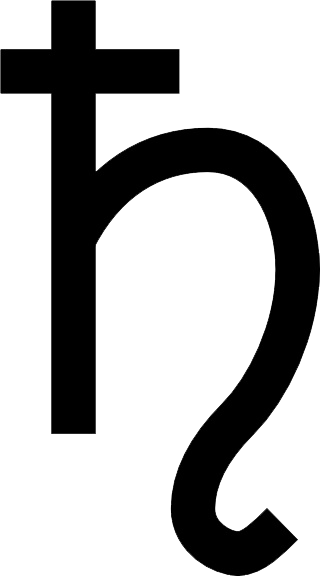

Santurno
Saturno
Saturno no es el único planeta que tiene anillos, pero definitivamente tiene los más hermosos. Los anillos que vemos están hechos de grupos de pequeños rizos que rodean a Saturno. Están hechas de trozos de hielo y roca. Al igual que Júpiter, Saturno es principalmente una bola de hidrógeno y helio
Cuando Galileo Galilei vio a Saturno a través de un telescopio en el siglo XVII, no estaba seguro de lo que estaba viendo. Al principio pensó que estaba mirando tres planetas, o un planeta con asas. Ahora sabemos que esos "mangos" resultaron ser los anillos de Saturno
un año en saturno dura 11 000 dias terrestres